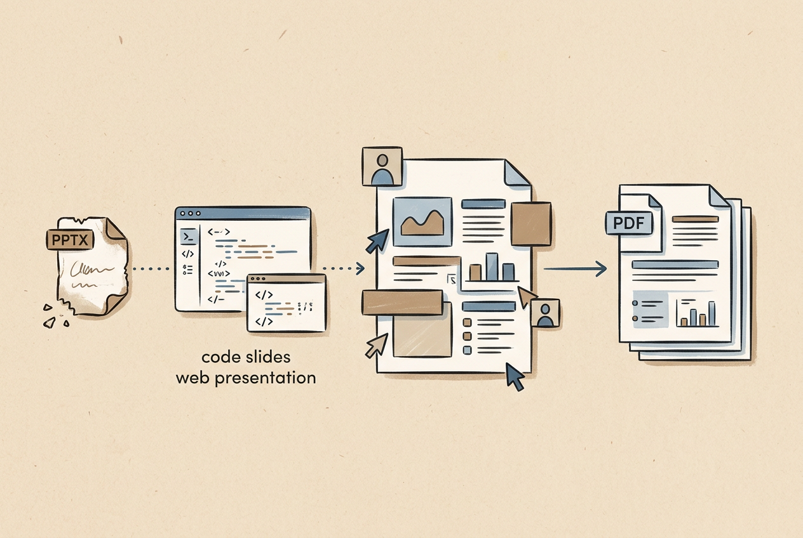
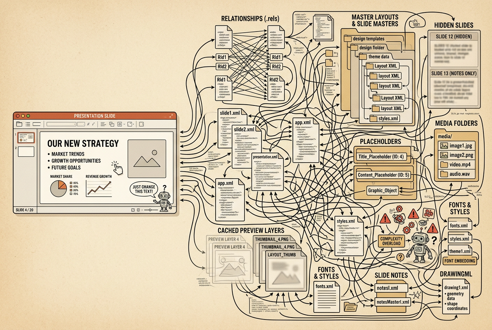
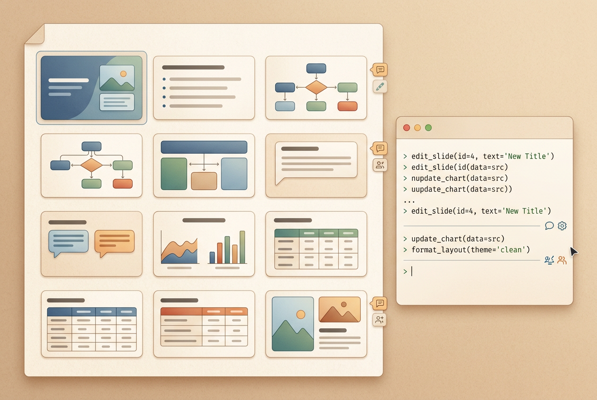
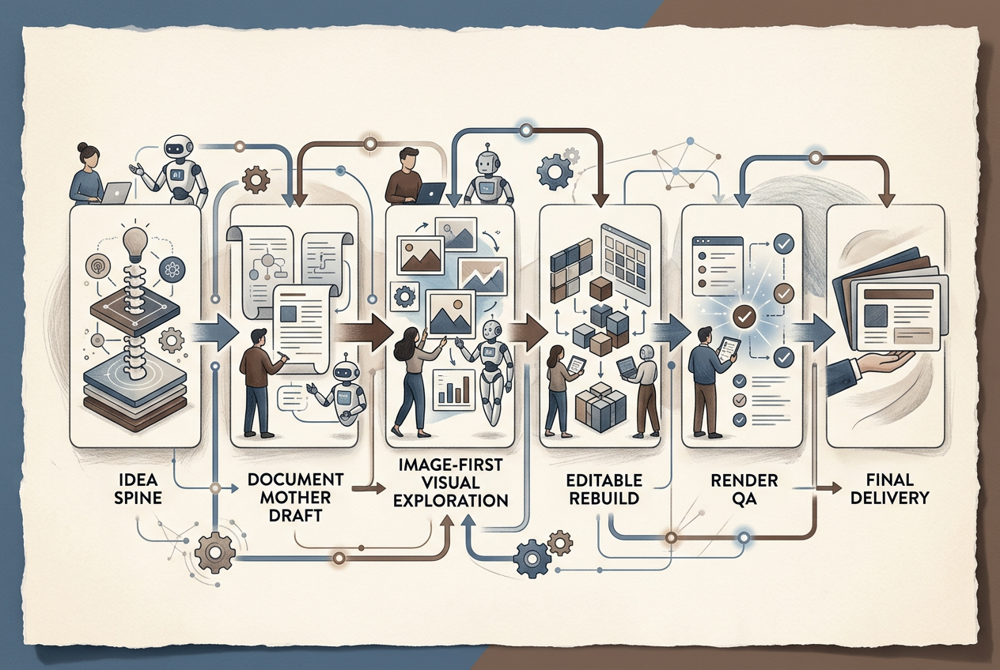
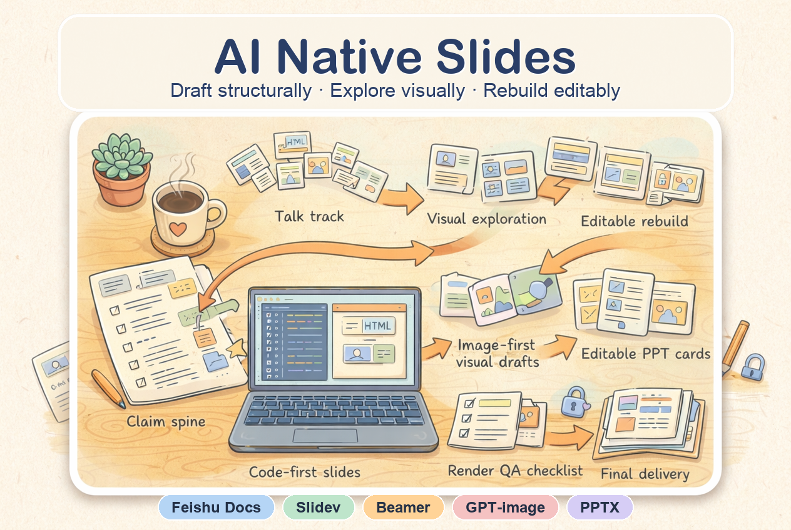
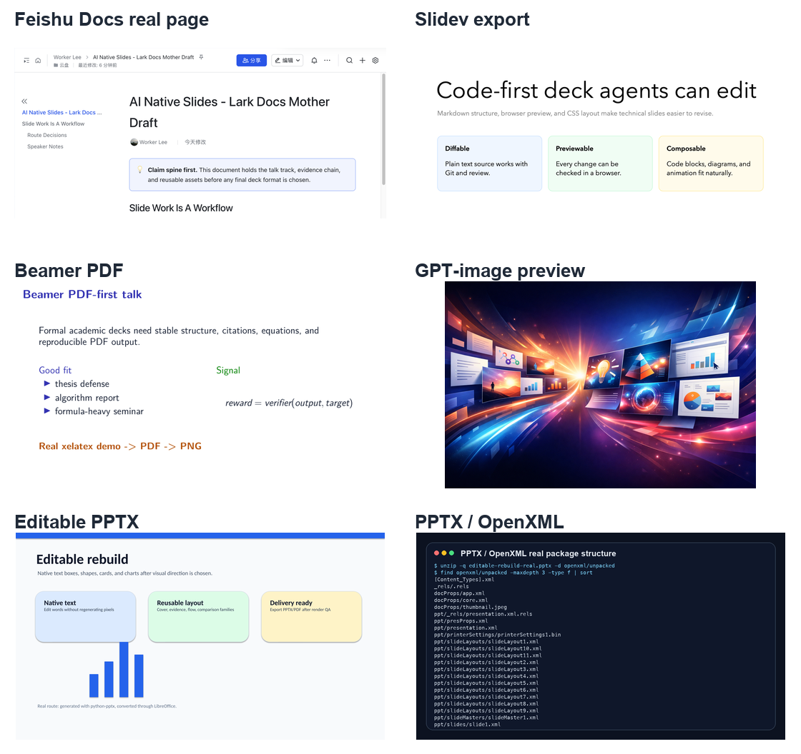

AI-native Slides：Agent 时代的幻灯片制作最佳实践
为什么我更推荐“飞书文档 + lark-cli”和 Slidev，而不是一开始就让 Agent 直接改 PPTX。
结论先行
GitHub：OpenCodexLabs/ai-native-slides。这是这套 workflow 对应的 agent skill 仓库。
如果目标是让 Agent 深度参与 slides 的长期迭代，我现在最推荐两条主线：飞书文档 + lark-cli，以及 Slidev。前者适合做文档版 slides、讲稿、素材池和证据链；后者适合做代码化、可版本管理、可网页预览的技术 slides。Beamer 可以作为正式学术汇报、论文答辩、PDF-first 场景的备选。PPTX 仍然重要，但更适合作为最终兼容格式，而不是主要创作格式。
更短一点说：Agent 时代，不要把“生成 PPTX 文件”当成目标；更好的目标是构建一条可持续迭代的表达工程 pipeline。 它从 claim spine、素材组织和讲稿开始，经过视觉探索和渲染 QA，最后再交付成 PPTX / PDF / web slides。

问题不是“AI 会不会做 PPT”
我平时做汇报材料时，最痛苦的并不是“没有内容”，而是内容一直在变：今天要补一页项目影响力，明天要把某个实验细节展开，后天又要把讲法从“技术栈路线”改成“项目故事路线”。PPT 在最终展示时很舒服，但在这个反复推敲的阶段，经常让我觉得自己不是在打磨观点，而是在和文本框、母版、页码、图片裁切、字体替换、导出预览搏斗。
这轮实验的起点也很具体：我想把一组视觉 Agent 相关的项目材料整理成一份可反复迭代的技术展示稿。手上有旧的 44 页 PPTX、从 PPTX 中解析出来的 70 多张图片元素、几份 Slidev 草稿、飞书文档里的讲稿和素材池，以及后面生成的 image-first PPT 预览版。问题很快从“能不能生成 PPT”变成了另一个更日常的问题：当材料每天都在变时，什么格式最适合我和 Agent 一起反复修改表达？
传统 PPTX 当然可以改，但它不是一个简单的单文件画布。一次看似很小的改动，比如统一页码、替换标题、移动素材，背后可能牵涉到 OpenXML、rels、theme、layout、master、media、占位符、隐藏页和 PowerPoint 缓存。Agent 能处理这些结构，但每次修改都要担心继承关系、缓存、占位符、导出预览和 Office 兼容性。对于高频迭代阶段，这不是最好的交互界面。

我实际试过的几条路线
这次不是抽象讨论，而是一次很具体、甚至有点狼狈的材料迁移实验。最开始我手里只有一个旧的 44 页 PPTX：里面有项目截图、论文图、聊天记录、影响力证据，也有很多手调出来的排版。我的第一反应当然是：让 Agent 直接改 PPTX 不就好了？但真正开始做之后，才发现“能改”和“适合长期一起改”是两件事。
第一站是原生 PPTX / OpenXML。 我先尝试从 PPTX 本身下手。比如统一 44 页右下角页码，看起来只是一个很小的需求，但实际会遇到母版、版式、页码占位符、普通文本框、隐藏页、PowerPoint 打开时的缓存等一串问题。第一版把页码写进 sldNum 占位符，打开后发现并不总是按预期显示；后面又改成普通文本框，并清理母版/版式里的旧页码。最后能做成，但这个过程让我意识到：PPTX 适合最终交付，却不适合在想法还没稳定时做高频迭代。
第二站是 Slidev。 因为 PPTX 的 XML 太重，我转向了 Slidev。这里体验立刻变好了：Markdown、HTML、CSS 都是 Agent 熟悉的东西，文本可搜索，结构可 diff，网页可以实时预览。我甚至做过一版从 v0.pptx 抽取文字框、图片和坐标的可编辑式复刻，把 PPT 里的元素拆出来贴回 Slidev，而不是整页截图。那一刻我感觉很接近“agent-native slides”了。但 Slidev 也不是无痛：右上角目录、overview、页码、黑边、鼠标滚轮、PDF 导出、图片精确定位，都需要反复调。它更适合工程师和技术 slides，但如果目标是极致稳定的正式主讲材料，仍然会消耗不少排版注意力。
第三站是飞书文档 + lark-cli。 这是这轮实验里最意外、也最实用的发现。我本来只是想试试飞书在线文档能不能被 CLI 改，后来发现它非常适合做“文档版 slides”。我把视觉 Agent 技术材料搬进去，加分幕、分隔线、callout、表格、项目图、研究脉络画板；又把 PPTX 里解析出来的 73 张图片元素逐个插到附录，方便后面随手复制复用。飞书文档的好处不是它最像 PPT，而是它同时适合人和 Agent 改：我可以在浏览器里直接调整，Agent 可以用 lark-cli 精确替换 block、插图、移动段落、更新画板。这个阶段，材料终于从“某个文件”变成了一个可持续维护的素材和讲稿系统。
第四站是飞书 PPT / Slides。 我也试过飞书的 slides 能力。结论比较微妙：它可以创建、可以写入，但读取普通 UI 新建的 slides、和现有页面结构兼容时还不够稳定。对 Agent 来说，飞书文档的 block 模型更可靠；飞书 PPT 更接近最终展示工具，但还没有成为我愿意长期依赖的主编辑面。
第五站是 Beamer。 后来我又想试试更学术、更 PDF-first 的路线。于是从 Slidev 中文稿和 PPTX 素材生成了一版 19 页 Beamer 原型。它能编译，结构也清楚，但问题也暴露出来：如果只是把内容重排成 Beamer，它就变成了另一套 slides，而不是复刻旧 PPT 的材料感。Beamer 适合学术答辩、算法报告、公式较多的严谨汇报；但如果要承接大量视觉素材、截图证据和商业化 pitch，它并不是最自然的第一选择。
第六站是 image-first PPT。 后面我又试了 image-first 的 PPT 生成路线，比如一次性生成 40 页视觉效果很完整的 deck。它的优点非常明显：快，整体好看，适合迅速看到一套材料的气质。但它也有一个根本限制：文字和布局都烘焙在图片里，不是 native editable。它适合做风格探索、视觉 preview、甚至给自己找灵感；但一旦进入“第 17 页这个表述要换一句、右下角图例要挪一点、某个项目名要更新”的阶段，就不如 editable-first 舒服。
所以，这几条路线走下来，我的判断不是“哪个工具赢了”，而是：Agent-native slides 的关键，是在不同阶段选择不同 representation。 早期需要文档和代码来承载思考，中期可以用 image-first 快速探索视觉，后期再重建成可交付的 PDF / PPTX / web slides。
| 路线 | 我真实遇到的体验 | 最后留下的判断 |
|---|---|---|
| PPTX / OpenXML | 能做精确修改，但母版、版式、占位符、隐藏页和缓存都会增加调试成本。 | 适合最终兼容，不适合早期高频创作。 |
| Slidev | Agent 很好改，网页预览快，也能做可编辑式复刻；但细节排版和演示交互需要调。 | 适合技术 slides 和代码化主讲版。 |
| 飞书文档 + lark-cli | 能稳定维护讲稿、证据链、画板、素材池和逐图元素，是最好用的母稿形态。 | 最适合做人机共创母稿和 extended notes。 |
| 飞书 PPT / Slides | 可以创建和写入，但读取和 UI 兼容性还不如文档稳定。 | 可继续观察，但暂时不作为主线。 |
| Beamer | PDF-first、学术感强；但重排容易丢掉原 PPT 的视觉素材感。 | 适合严谨学术汇报，不一定适合视觉 pitch。 |
| image-first PPT | 非常适合快速看整体风格和气质，但后期逐字逐图编辑不方便。 | 适合 preview 和视觉探索，不适合最终维护。 |
一个关键区分：image-first 与 editable-first
Slides 制作里很容易混淆两件事：看起来像一套好 slides，以及后续能被稳定修改的 slides。前者对应 image-first，后者对应 editable-first。
Image-first 的思路是先把每页当成一张完整视觉稿。它的优势是快、漂亮、风格统一，适合探索封面、impact page、framework page、流程图和概念图。缺点也很明显：文字和布局被烘焙进图片里，后续改一个数字、换一句话、挪一个图，都不如 native editable 文件自然。
Editable-first 则反过来：文本框、图片、表格、图形都是可编辑对象。PPTX、飞书文档、Slidev、Beamer 都属于这个方向。它适合长期维护和局部修改，但视觉 polish 的成本更高，Agent 也更容易在细节排版上“造格式”。
所以我的结论不是二选一，而是：早期可以 image-first 探索审美，中期用文档或代码格式稳定结构，后期再做 editable-final / PDF delivery。
为什么飞书文档 + lark-cli 很适合做母稿
飞书文档不一定最像 PPT，但它非常适合做人和 Agent 共同编辑的 canvas。它能承载主线、讲稿、表格、callout、分隔线、画板、图片证据、素材池和附录。更重要的是，Agent 可以用 lark-cli 做稳定的局部修改：替换一段文字、插入一张图、补一个画板、移动一个 block，而不需要每次都重新生成整个文件。
在这次实验里，飞书文档承担了几个关键角色：它是技术材料的 extended notes，是 PPTX 图片元素的素材池，是研究脉络图的画板容器，也是每个章节主旨句和讲稿的沉淀位置。对复杂技术材料来说，这比一开始就在 PPTX 里反复拖拽要舒服得多。
但飞书文档也有边界：它更偏 reader-driven，适合阅读、复盘和会后补充；正式展示现场通常需要 speaker-driven 的节奏控制。也就是说，飞书文档适合做母稿，正式 talk 仍然应该抽取成更短、更强节奏的 slides / PDF。

为什么 Slidev 仍然值得推荐
Slidev 的优势是它把 slides 变成代码和 Markdown。对 Agent 来说，这非常友好：结构清楚、文本可搜索、样式可复用、版本控制自然，也能快速本地预览。它尤其适合工程师、研究员和技术团队，用来做包含代码、流程图、动效和网页预览的 slides。
我也遇到过 Slidev 的问题：页码、overview、控制栏、鼠标交互、PDF 导出、素材精确定位，都需要调。它比 PPTX 更适合 Agent 修改，但不代表完全没有排版成本。我的定位是：Slidev 很适合做代码化主讲版；如果听众和场景接受 web / PDF slides，它会比 PPTX 更 agent-native。
Beamer 的位置：严谨学术 PDF
Beamer 不是这次技术展示材料的主推荐，但它有明确位置：正式、严谨、学术感强、PDF-first 的汇报。论文答辩、学术 seminar、算法报告、公式较多的 talk，都很适合 Beamer。它的优势是版本化、可复现、结构稳定；劣势是复杂视觉素材和商业化 pitch 的排版成本较高。
这次我试过从 Slidev 中文稿和 PPTX 素材生成 Beamer 原型。结果也很有启发：如果只是把内容重排成 Beamer，它会变成另一套 slides，而不是复刻原材料。若要用 Beamer 复刻 PPT，更合理的方式应该是“素材贴图式”或“可编辑式”逐页重建。也就是说，Beamer 适合严谨输出，但不一定适合所有视觉表达。
我现在推荐的工作流
如果让我总结一套 Agent-native slides workflow，我会写成：
claim spine → talk-track → document mother draft → visual exploration → editable rebuild → render QA → final PDF / PPTX delivery。
- Claim spine：先确定每页只证明一个点，而不是先选模板。
- Talk-track：每页写 2-3 句主旨，明确现场怎么讲。
- Document mother draft：用飞书文档或 Markdown 放完整逻辑、证据和素材。
- Visual exploration：用 image-first 方法快速探索视觉风格和 layout family。
- Editable rebuild：故事稳定后，再重建成 Slidev、PPTX、Beamer 或飞书 PPT。
- Render QA：检查页码、字体、裁切、导出 PDF、隐藏页和多端显示。
- Final delivery：现场讲用 PDF / PPTX；会后补充给文档链接。

最终建议
如果你正在做技术材料、技术汇报或研究展示，我会这样选：
| 场景 | 推荐方案 | 为什么 |
|---|---|---|
| 技术材料母稿、讲稿、证据链、素材池 | 飞书文档 + lark-cli | 最适合人和 Agent 共同维护：能放完整逻辑、素材、画板、表格、截图证据，也方便局部更新。 |
| 技术 slides、网页演示、工程化迭代 | Slidev | Markdown / HTML / CSS 都是 Agent 友好的表示，适合版本管理、代码块、网页预览和快速结构调整。 |
| 正式学术汇报、答辩、PDF-first | Beamer | 结构严谨、可复现、适合公式和学术排版，但不一定适合复杂视觉 pitch。 |
| 需要 PowerPoint 生态协作 | 最后再导出或重建 PPTX | PPTX 适合最终兼容和对外协作，但不适合在想法还没稳定时高频改 XML / layout。 |
| 快速探索视觉风格 | image-first draft | 适合快速看整体气质、版式和视觉冲击力；但文字和布局被烘焙进图片后，后期维护成本高。 |
| 核心判断 | 含义 |
|---|---|
| 好的 slides 不再只是一个文件 | 它更像一套表达工程：观点、讲稿、素材、视觉系统、可编辑版本和最终交付物共同组成完整 workflow。 |
| Agent 的价值不是一键生成 PPTX | 更重要的是参与完整流程：整理观点、沉淀素材、生成草稿、检查渲染、重建可编辑版本。 |
| 最终目标是可讲、可改、可交付 | 现场要能控制节奏，修改时要能局部编辑，交付时要稳定导出 PDF / PPTX / web slides。 |
配套 Skill 仓库
我也把这套 workflow 提炼成了一个小的 agent skill 仓库：OpenCodexLabs/ai-native-slides。这篇博客负责讲实践过程和判断，仓库负责沉淀可复用的路线选择规则与生产检查清单。

